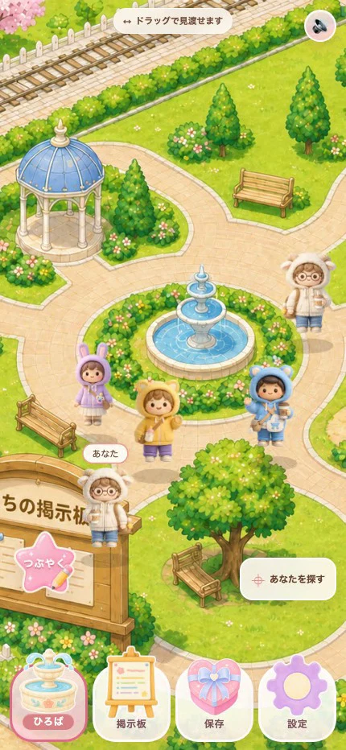
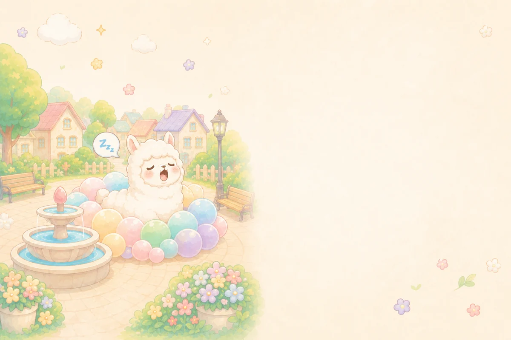
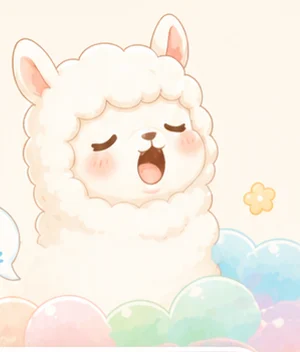

好きな姿で、こんにちは。
広場では、ニックネームとアバターで。
お気に入りの子を選んで、あなたらしく。
MIYAZAKI · ONLINE KOSODATE HIROBA
子育ての途中に、
ひとりじゃない時間を。
ひとこと置いても、眺めていても。
あなたのペースで過ごせる、
オンライン子育てひろば。
スマホのブラウザから。インストールはいりません。



画面は開発版のイメージです。
01 A LITTLE BREATH
誰かと話したいけど、
返信をする元気はない。
子どもと行ける場所、
どこで見つけよう。
そんなときに、ふらっと寄れる場所があったら。
ここは、子育てをしているあなたのための広場です。
02 MEET AT THE PLAZA
同じように子育てをしている、誰かの気配。
小さな共感が、今日のひと息になりますように。

広場では、ニックネームとアバターで。
お気に入りの子を選んで、あなたらしく。
今日あった小さな出来事を、短くつぶやく。
長い文章を考えなくても大丈夫です。
言葉が出てこないときは、リアクションで。
投稿せず、眺めて過ごすこともできます。
03 HELLO, MY TOWN
「今度、子どもと行ってみようかな。」
そのきっかけは、まちの掲示板に。
宮崎の親子イベントを、日程や子どもの年齢、
無料・屋内・予約不要などの条件で絞り込み。
気になる予定は「行ってみたい」に保存できます。
子どもの年齢や、その日の過ごし方に合わせて。
日時・場所に加えて、授乳室やおむつ替えの情報も。
気になった予定を、あとから見返せます。


紹介用の開発画面です。表示のイベントはサンプルです。
開催日時・参加条件は、主催者の公式情報をご確認ください。

ふぁ〜。今日も、あなたのペースで。NO NEED TO HURRY
ここでは、話題を用意しなくても、
毎日来なくても、大丈夫。
授業の合間も、家事のあとも。
子育てをしているあなたが、
ちょっと肩の力を抜ける場所でありたい。
アルパカのあくび
04 YOUR FIRST VISIT
スマホのブラウザから、はじめられます。
「ひろばに入る」から
Webアプリを開きます。

案内に沿ってニックネームなどを
設定し、アバターを選びます。
広場を眺めたり、つぶやいたり。
気になるお出かけ先を探しても。
Webアプリが別のタブで開きます。
QUESTIONS & ANSWERS
はじめての方へ。
